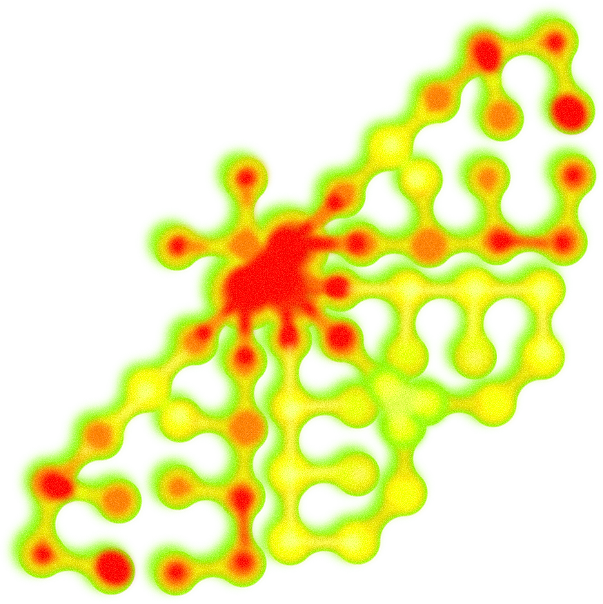
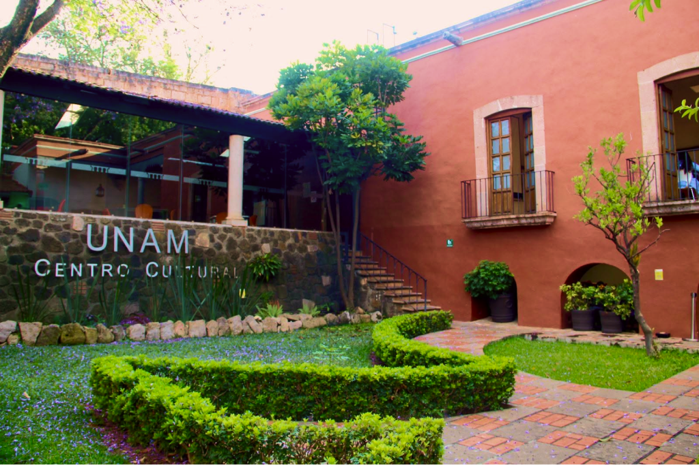
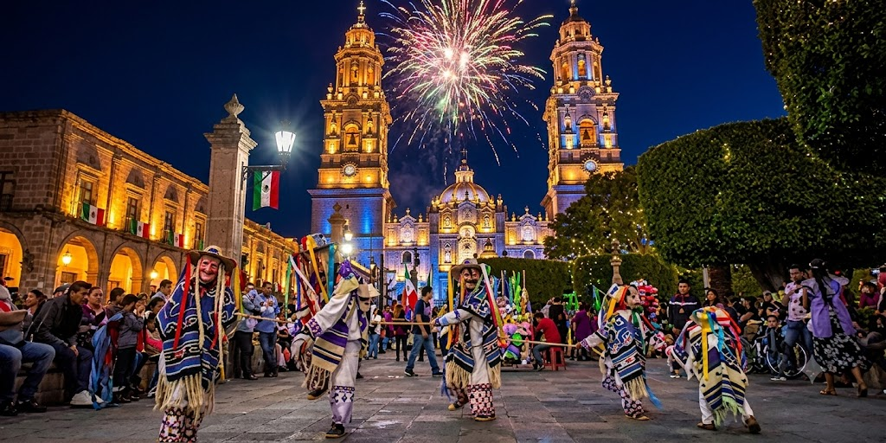

Segunda Escuela Michoacana
Modelación y dinámicas de fenómenos biológicos
30 NOVIEMBRE al 4 DICIEMBRE
Quiero registrarmeConvocamos a estudiantes en los últimos años de licenciatura (o inicio de maestría) que sienten interés por la biología matemática, y que buscan explorar si este es su camino y comenzar a construir una ruta clara hacia estudios de posgrado e investigación.
Durante una semana, la escuela reúne a estudiantes y especialistas nacionales e internacionales para trabajar en problemas reales en salud pública, sistemas biológicos y medio ambiente, utilizando herramientas matemáticas, computacionales y de análisis de datos en equipos interdisciplinarios.
Esta es una experiencia intensiva que requiere dedicación de tiempo completo,
participación activa y disposición para enfrentar retos conceptuales,
computacionales y cuantitativos.
No buscamos expertos en matemáticas, sino estudiantes con curiosidad, motivación y
apertura para desarrollar el pensamiento matemático como una herramienta para
comprender y resolver problemas del mundo real.
Al finalizar, cada participante tendrá una mayor claridad sobre su interés en la investigación científica, experiencia en el análisis y modelado de datos, y una visión concreta de las oportunidades de posgrado, incluyendo becas y procesos de aplicación, así como una red inicial de contactos académicos.
El programa se organiza en torno a cuatro proyectos de investigación desarrollados en equipos durante una semana intensiva de trabajo presencial. Dependiendo del proyecto, podrán sugerirse actividades previas para optimizar la experiencia durante la semana.
Además de los trabajos en equipo, el curso se complementará con conferencias plenarias y una mesa redonda sobre la trayectoria en investigación y opciones de posgrado.
Cada participante seleccionará un único proyecto de investigación, lo cual define su equipo de trabajo y el curso obligatorio asociado. Esta elección implica un compromiso con el tema durante toda la semana y una participación activa en el desarrollo del proyecto.
Los estudiantes recibirán un entrenamiento en epidemiología matemática y modelación de enfermedades infecciosas, con énfasis en el uso de modelos para el análisis de datos y la toma de decisiones en salud pública. Este entrenamiento incluye cuatro módulos:
Todos los participantes trabajarán con bases de datos reales y modelos aplicados a problemas actuales en salud pública, sistemas biológicos y medio ambiente, guiados por investigadores nacionales e internacionales.
Estudiantes de los últimos años de licenciatura o inicio de maestría.
Dirigido a personas con formación en matemáticas, física, ingeniería, computación, estadística y en ciencias biológicas y de la salud como biología, ecología, epidemiología, incluyendo áreas afines como ciencias agrícolas y ambientales.
Se recomienda que la carta de motivos refleje con claridad el interés del estudiante en la biología matemática y su disposición para aprovechar una experiencia intensiva de formación.
No buscamos únicamente expedientes completos, sino estudiantes con interés genuino en la biología matemática, compromiso con su formación y apertura para explorar una posible trayectoria en investigación.
De manera excepcional, podrán considerarse postulaciones de estudiantes en etapas más tempranas de licenciatura o de doctorado con un perfil acorde al programa.
| Lunes | Martes | Miércoles | Jueves | Viernes | Sábado | |
|---|---|---|---|---|---|---|
| 8:00–9:00 | Bienvenida | Café | Café | Café | Café | Café |
| 9:00–10:00 | Módulo 1 | Módulo 2 | Plenaria 2 | Módulo 3 | Módulo 4 | Presentación de proyectos y cierre de actividades |
| 10:00–10:30 | Descanso | Pósters | Descanso | |||
| 11:00–12:00 | Módulo 1 | Módulo 2 | Mesa redonda | Módulo 3 | Módulo 4 | |
| 12:30–13:30 | Plenaria 1 | Posgrado | Plenaria 3 | Plenaria 3 | ||
| 13:30–15:00 | Comida | |||||
| 15:00–16:30 | Proyectos 1, 2, 3, 4 | Tarde libre | Proyectos 1, 2, 3, 4 | |||
| 16:30–17:00 | Descanso | Descanso | ||||
| 17:00–18:30 | Proyectos 1, 2, 3, 4 | Proyectos 1, 2, 3, 4 | ||||

Avenida Acueducto 19, 58000 Morelia
Michoacán de Ocampo
